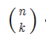
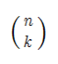
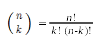
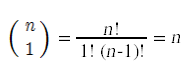
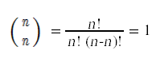
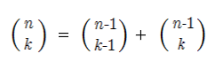

The combination symbol or "n choose k" has many applications in mathematics. In probability theorycounts the number of ways that we can get k heads in a sequence of n flips of a fair coin.
 is computed via the formula

Two special cases are easy to compute.


One way to compute a combination is to compute all the factorials involved and then divide the denominator into the numerator. This is not practical for n beyond 8, because n! will not fit into a 32 bit integer, even though the final result will. Instead, the most common method for computing a combination makes use of this recursive relationship:

This recursive relationship coupled with the two special cases makes it possible to construct a recursive function definition in C to compute a combination.
int C(int n,int k)
{
if(k == 1)
return n;
if(k == n)
return 1;
return C(n-1,k-1)+C(n-1,k);
}
This works, and does compute the correct value for a combination for n well beyond 8.
This approach does have one flaw. Consider what happens when we try to compute C(8,5).
C(8,5) calls C(7,4) and C(7,5) C(7,4) calls C(6,3) and C(6,4) C(7,5) calls C(6,4) and C(6,5) C(6,3) calls C(5,2) and C(5,3) C(6,4) calls C(5,3) and C(5,4) C(6,4) calls C(5,3) and C(5,4) C(6,5) calls C(5,4) and C(5,5)
What you start to notice after a while is that the same functions are getting called multiple times. This effect becomes so severe for large n and k that the simple recursive function shown above becomes immensely inefficient.
We can construct a program that illustrates just how bad this problem is. The trick is to declare a global two dimensional array
int counts[101][101];
that stores information about how many times we call C with each pair of parameter values n and k.
At the start of the program, we call this function to set all the counts to 0:
void initCounts(int maxN,int maxK)
{
int n,k;
for(n = 1;n <= maxN;n++)
for(k = 1;k <= maxK;k++)
counts[n][k] = 0;
}
We then modify the function that computes the combination to record how many times it gets called with each pair of parameters.
int C(int n,int k)
{
counts[n][k]++;
if(k == 1)
return n;
if(k == n)
return 1;
return C(n-1,k-1)+C(n-1,k);
}
At the end of the program we dump this count data to a file.
void saveCounts(int maxN,int maxK)
{
ofstream out;
int n,k;
out.open("counts.txt");
for(n = 1;n <= maxN;n++)
{
for(k = 1;k <= maxK;k++)
out << std::setw(5) << counts[n][k];
out << std::endl;
}
out.close();
}
The results are shocking. Here is the set of counts that results when we try to compute C(16,10):
0 0 0 0 0 0 0 0 0 0 1287 1287 0 0 0 0 0 0 0 0 495 1287 792 0 0 0 0 0 0 0 165 495 792 462 0 0 0 0 0 0 45 165 330 462 252 0 0 0 0 0 9 45 120 210 252 126 0 0 0 0 1 9 36 84 126 126 56 0 0 0 0 1 8 28 56 70 56 21 0 0 0 0 1 7 21 35 35 21 6 0 0 0 0 1 6 15 20 15 6 1 0 0 0 0 1 5 10 10 5 1 0 0 0 0 0 1 4 6 4 1 0 0 0 0 0 0 1 3 3 1 0 0 0 0 0 0 0 1 2 1 0 0 0 0 0 0 0 0 1 1 0 0 0 0 0 0 0 0 0 1
What we can read off from this table is that C(2,1), C(2,2), and C(3,2) each got called a total of 1287 times in the process of computing C(16,10). This problem of redundant function calls gets exponentially worse as n and k get larger. By the time you get to n = 30 this simple recursive method for computing C(n,k) becomes completely impractical.
The simple fix needed to eliminate redundant calls to a recursive function is called memoization. The idea is to remember any values we compute, so that the next time we are asked to compute a value we can look it up instead of recomputing it. This works best for recursive functions with a moderate number of integer parameters. In that case, we can remember values we have computed earlier by storing the values in a table. Whenever we are asked to compute a value, we start by consulting the table.
In the case of the function to compute combinations, we proceed as follows. We start by making a global two dimensional array to hold the remembered function values.
#define MAX_N 40 #define MAX_K 40 int c[MAX_N+1][MAX_K+1];
At the start of the program, before we attempt to compute any combinations, we initialize all values in the table to a marker value that indicates that nothing has been computed yet. For this application, 0 works as a reasonable marker value.
void initTable()
{
int n,k;
for(n = 0;n <= MAX_N;n++)
for(k = 0;k <= MAX_K;k++)
c[n][k] = 0;
}
We then rewrite the recursive function to use the table. Whenever we are asked to compute C(n,k) for a particular n and k, we start by checking the table to see if has already been computed. If it hasn't already been computed, we compute it and save the value in the table before returning with the result.
int C(int n,int k)
{
int result = c[n][k];
if(result == 0)
{
if(k == 1)
result = n;
else if(k == n)
result = 1;
else
result = C(n-1,k-1)+C(n-1,k);
c[n][k] = result;
}
return result;
}
An interesting side effect of the memoized solution is that it ends up filling up a table c[n][k] with values for C(n,k).
A more direct approach to doing the combinations problem efficiently is to just write code that fills the table with the right values. This is known as the dynamic programming strategy.
We can do this with a function
void initTable()
{
// Fill the table with correct values
// for c[n][k] for all values of n and k
}
Once the c array is properly filled with values, we can rewrite the function to compute combinations
int C(int n,int k)
{
if(k <= n)
return c[n][k];
else
return 0;
}
To write the initTable function we simply have to replicate the logic in the original recursive solution
int C(int n,int k)
{
if(k == 1)
return n;
if(k == n)
return 1;
return C(n-1,k-1)+C(n-1,k);
}
in a set of loops. There are two things we need to do. The first is to write a pair of loops that fill in the c[n][k] entries for all n and k in the base cases. The base cases for combinations are k = 1 and k = n:
void initTable()
{
int n, k;
// Fill in the base cases
for(n = 0;n <= MAX_N;n++) {
c[n][k] = 1;
c[n][1] = n;
c[n][0] = 1;
}
}
Finally, we construct a loop that fills in c[n][k] for all of the remaining entries. We have to be careful when constructing the loop to make sure that the formula for c[n][k] only uses entries that the loop has already filled in. Here is the correct loop structure to do this.
void initTable()
{
int n, k;
// Fill in the base cases
for(n = 1;n <= MAX_N;n++) {
c[n][n] = 1;
c[n][1] = n;
c[n][0] = 1;
}
// Fill in the remaining entries
for(n = 2;n <= MAX_N;n++){
for(k = 2;k < n;k++)
c[n][k] = c[n-1][k-1]+c[n-1][k];
for(k = n+1;k <= MAX_K;k++)
c[n][k] = 0;
}
}